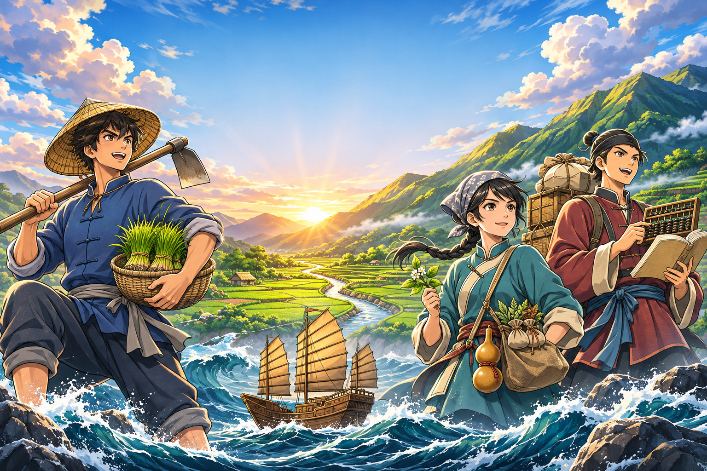

⛵
唐山港口・整裝待發
⚠️ 危機狀態
海風徐徐，帆船正準備橫渡險惡的黑水溝……
序幕

— 唐山過台灣，心肝結歸丸 —
化身清代渡海先民，橫渡九死一生的黑水溝、集資開鑿八堡水圳、抵禦颱風與瘴癘，在抉擇與歷史智慧中守住糧水與民心！
序幕・整裝待發
兩項數值皆代表拓荒團隊的生命力，任一項歸零就會立刻觸發對應的歷史失敗結局！請妥善搭配角色天賦與 4 格行囊道具。
在每個事件提問畫面中，點選閃亮的「📜 歷史背景錦囊」即可展開大字體背景解說與課堂思考題。老師可投影帶領全班討論，學生完成閱讀後按下確認，每題皆可恢復 +5 🍚糧水與 +5 ❤️民心！
每完成一幕歷史抉擇，就會進入 10 秒動作/益智挑戰（閃避黑水溝風浪、搶通水圳引水、守護聚落滅火），讓全班氣氛瞬間沸騰！
程式會自動讀取同資料夾下的 黑水溝海浪.png 與 台灣早期土地.png。若您在線上預覽視窗測試，也可直接從電腦選取這兩張圖檔即時套用：